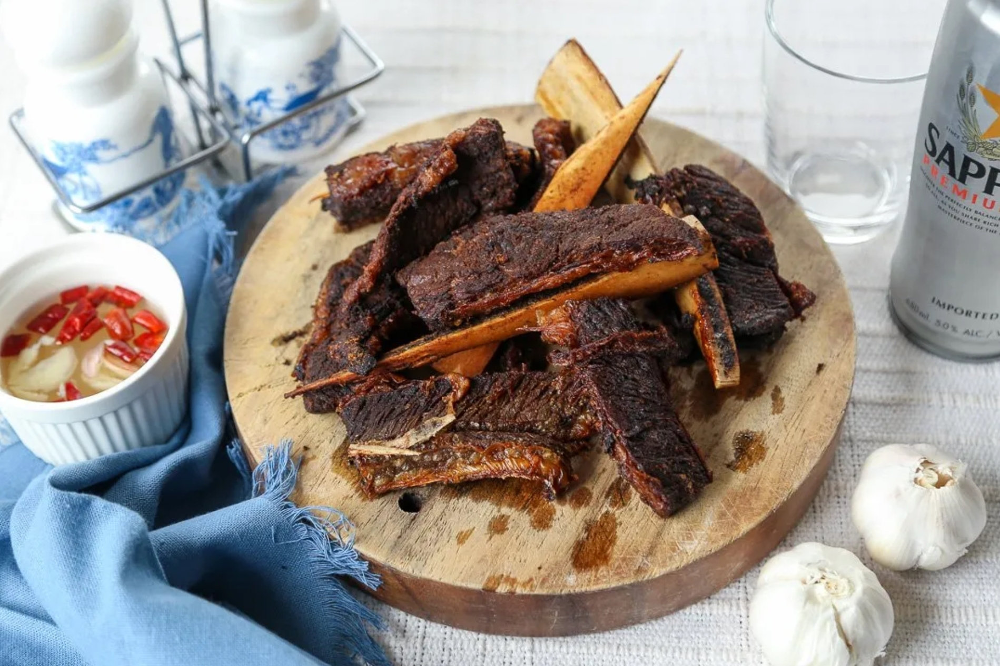

Denny's Recipe
This recipe is near and dear to my heart - my mom always makes this whenever I come home for the summer or the holidays! It's my favourite dish and never fails to make me feel like I'm home.
Crispy Beef Ribs

Ingredients:
- 1 kg beef spareribs, sliced into riblets
- 1/2 cup soy sauce
- 1 whole garlic, crushed
- 2 pcs star anise
- 3 pcs bay leaf
- 1 tbsp sugar
- 1 tsp peppercorns
- 3 cups water
- cooking oil
Vinegar Dip:
- 1 cup vinegar
- 3 birds-eye chillies, chopped with seeds
- 1 shallot, finely chopped
- 2 cloves garlic, minced
- 1 tbsp sugar
- freshly ground black pepper
Instructions:
- Place ribs in a pot and add enough water to cover the beef, bring it to a boil and let the scum rise. Turn the heat off, drain the liquid out and rinse beef with running tap water.
- Place beef back into the pot together with all of the ingredients except the oil. Bring it to a boil, simmer and cook for 2 hrs. or until fork tender.
- Separate beef from liquid and let it cool. Once cooled down place it on paper towel lined plate to absorb excess liquid, replace paper towel if needed then place in the refrigerator for at least 4 hrs.
- Prepare a deep fryer or wok filled with oil, heat it up and deep fry beef ribs until crispy.
- Drain the ribs and place in a paper towel lined plate to drain excess oil.
- Prepare dip by mixing all vinegar dip ingredients, then serve with crispy ribs.